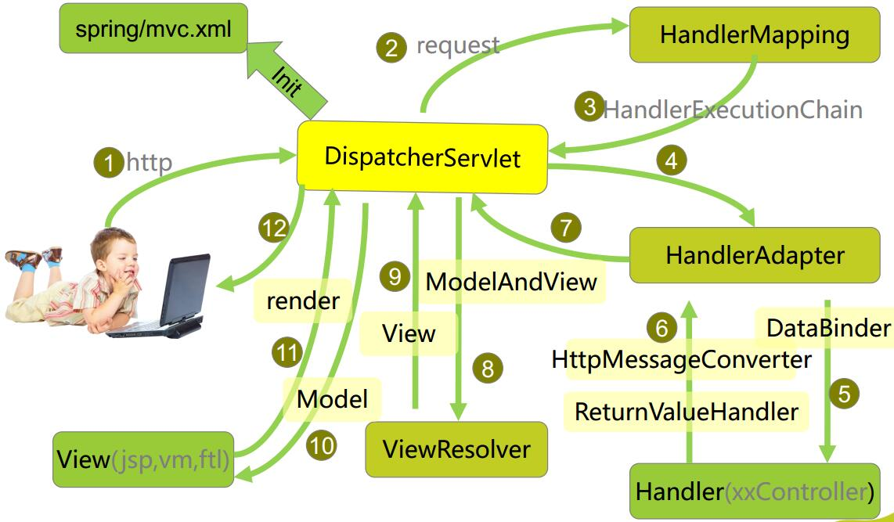
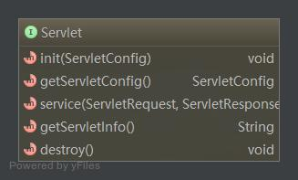
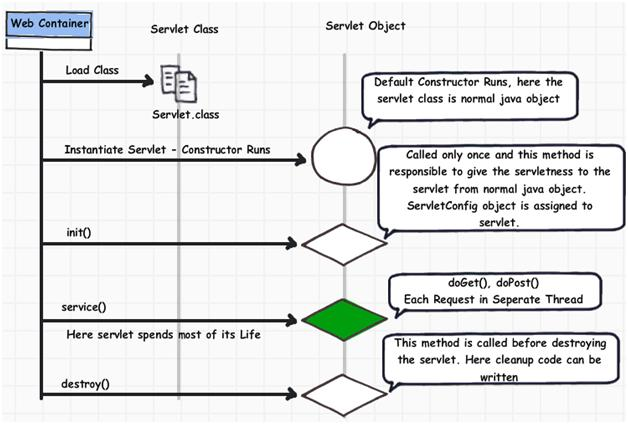
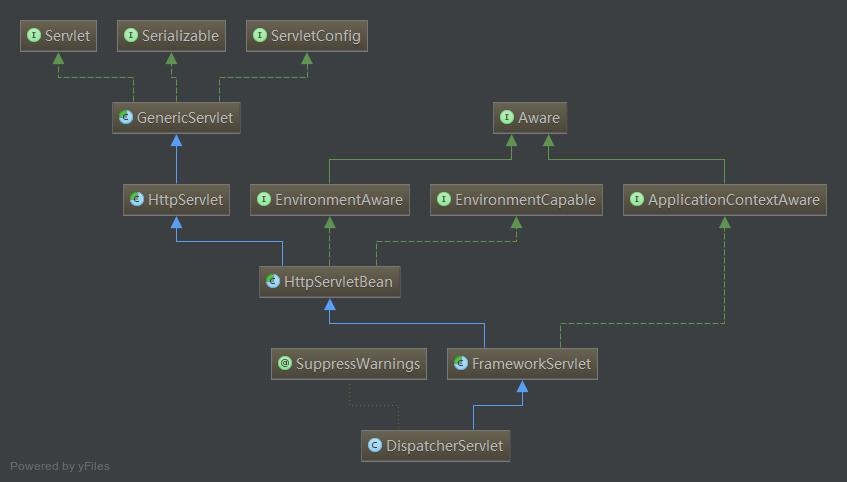

Spring Mvc源码剖析
架构

SpringMVC的核心是 DispatcherServlet
本质
我们通过在web.xml中配置如下的语句，引入SpringMVC
1 | <servlet> |
上述代码段指定了servlet的class是spring的DispatcherServlet，初始化配置文件是mvc-dispatcher-servlet.xml,以及servlet的加载顺序。
既然DispatcherServlet也是一个Servlet，那他肯定也遵从servlet的规范。
我们知道Servlet定义了如下的接口：

其中比较重要的是init和service接口init方法在servlet的一生中只初始化一次，service接口是Servlet对外提供服务的接口
Servlet的生命周期如下:

我们来看下DispatcherServlet的继承结构：

init方法
直接去看DispatcherServlet的源码是没有发现init方法的， 它的init方法继承自HttpServletBean，源码如下：1
2
3
4
5
6
7
8
9
10
11
12
13
14
15
16
17
18
19
20
21
22
23
24
25
26
27
28
29
30
31
32
33 /**
* Map config parameters onto bean properties of this servlet, and
* invoke subclass initialization.
* @throws ServletException if bean properties are invalid (or required
* properties are missing), or if subclass initialization fails.
*/
@Override
public final void init() throws ServletException {
if (logger.isDebugEnabled()) {
logger.debug("Initializing servlet '" + getServletName() + "'");
}
// Set bean properties from init parameters.
try {
PropertyValues pvs = new ServletConfigPropertyValues(getServletConfig(), this.requiredProperties);
BeanWrapper bw = PropertyAccessorFactory.forBeanPropertyAccess(this);
ResourceLoader resourceLoader = new ServletContextResourceLoader(getServletContext());
bw.registerCustomEditor(Resource.class, new ResourceEditor(resourceLoader, getEnvironment()));
initBeanWrapper(bw);
bw.setPropertyValues(pvs, true);
}
catch (BeansException ex) {
logger.error("Failed to set bean properties on servlet '" + getServletName() + "'", ex);
throw ex;
}
// Let subclasses do whatever initialization they like.
initServletBean();
if (logger.isDebugEnabled()) {
logger.debug("Servlet '" + getServletName() + "' configured successfully");
}
}
在这个方法中，主要完成了bean属性的配置，并且给子类留下了相应的hook
1 | // Let subclasses do whatever initialization they like. |
这个方法在FrameworkServlet中有具体的实现，现在看下FrameworkServlet中的实现。
1 | /** |
webApplicationContext在此进行初始化，并且给子类留下了一个hook1
2this.webApplicationContext = initWebApplicationContext();
initFrameworkServlet();
initFrameworkServlet在本类中并没有实现，用于子类控制
1 | /** |
在initWebApplicationContext方法中，有一个空实现的方法onRefresh()1
2
3
4
5
6
7
8
9
10/**
* Template method which can be overridden to add servlet-specific refresh work.
* Called after successful context refresh.
* <p>This implementation is empty.
* @param context the current WebApplicationContext
* @see #refresh()
*/
protected void onRefresh(ApplicationContext context) {
// For subclasses: do nothing by default.
}
这个方法也是钩子方法，DispatcherServlet正是实现了这个方法。
1 |
|
onRefresh方法中又调用了initStrategies方法，在这个方法中进行了大量的初始化工作。
视图解析器和HandlerMappings都是在这个方法中初始化的。
重点看一下initHandlerMappings方法，这个方法是初始化url映射的
1 | /** |
其根据 this.detectAllHandlerMappings 的值来确定是否扫描祖先定义的handlermappings，如果用户没有配置的话，就会使用默认的HandlerMapping1
2/** Detect all HandlerMappings or just expect "handlerMapping" bean? */
private boolean detectAllHandlerMappings = true;
service方法
servlet接口中另外一个重要的方法叫做service
service方法最早是在HttpServlet类中实现的，代码如下：1
2
3
4
5
6
7
8
9
10
11
12
13
14
15
16
17
18
19
20
21
22
23
24
25
26
27
28
29
30
31
32
33
34
35
36
37
38
39/**
* Dispatches client requests to the protected
* <code>service</code> method. There's no need to
* override this method.
*
* @param req the {@link HttpServletRequest} object that
* contains the request the client made of
* the servlet
*
* @param res the {@link HttpServletResponse} object that
* contains the response the servlet returns
* to the client
*
* @exception IOException if an input or output error occurs
* while the servlet is handling the
* HTTP request
*
* @exception ServletException if the HTTP request cannot
* be handled
*
* @see javax.servlet.Servlet#service
*/
public void service(ServletRequest req, ServletResponse res)
throws ServletException, IOException
{
HttpServletRequest request;
HttpServletResponse response;
if (!(req instanceof HttpServletRequest &&
res instanceof HttpServletResponse)) {
throw new ServletException("non-HTTP request or response");
}
request = (HttpServletRequest) req;
response = (HttpServletResponse) res;
service(request, response);
}
}
它又调用自身的一个service方法:1
2
3
4
5
6
7
8
9
10
11
12
13
14
15
16
17
18
19
20
21
22
23
24
25
26
27
28
29
30
31
32
33
34
35
36
37
38
39
40
41
42
43
44
45
46
47
48
49
50
51
52
53
54
55
56
57
58
59
60
61
62
63
64
65
66
67
68
69
70
71
72
73
74
75
76
77
78
79
80
81
82
83/**
* Receives standard HTTP requests from the public
* <code>service</code> method and dispatches
* them to the <code>do</code><i>XXX</i> methods defined in
* this class. This method is an HTTP-specific version of the
* {@link javax.servlet.Servlet#service} method. There's no
* need to override this method.
*
* @param req the {@link HttpServletRequest} object that
* contains the request the client made of
* the servlet
*
* @param resp the {@link HttpServletResponse} object that
* contains the response the servlet returns
* to the client
*
* @exception IOException if an input or output error occurs
* while the servlet is handling the
* HTTP request
*
* @exception ServletException if the HTTP request
* cannot be handled
*
* @see javax.servlet.Servlet#service
*/
protected void service(HttpServletRequest req, HttpServletResponse resp)
throws ServletException, IOException
{
String method = req.getMethod();
if (method.equals(METHOD_GET)) {
long lastModified = getLastModified(req);
if (lastModified == -1) {
// servlet doesn't support if-modified-since, no reason
// to go through further expensive logic
doGet(req, resp);
} else {
long ifModifiedSince = req.getDateHeader(HEADER_IFMODSINCE);
if (ifModifiedSince < lastModified) {
// If the servlet mod time is later, call doGet()
// Round down to the nearest second for a proper compare
// A ifModifiedSince of -1 will always be less
maybeSetLastModified(resp, lastModified);
doGet(req, resp);
} else {
resp.setStatus(HttpServletResponse.SC_NOT_MODIFIED);
}
}
} else if (method.equals(METHOD_HEAD)) {
long lastModified = getLastModified(req);
maybeSetLastModified(resp, lastModified);
doHead(req, resp);
} else if (method.equals(METHOD_POST)) {
doPost(req, resp);
} else if (method.equals(METHOD_PUT)) {
doPut(req, resp);
} else if (method.equals(METHOD_DELETE)) {
doDelete(req, resp);
} else if (method.equals(METHOD_OPTIONS)) {
doOptions(req,resp);
} else if (method.equals(METHOD_TRACE)) {
doTrace(req,resp);
} else {
//
// Note that this means NO servlet supports whatever
// method was requested, anywhere on this server.
//
String errMsg = lStrings.getString("http.method_not_implemented");
Object[] errArgs = new Object[1];
errArgs[0] = method;
errMsg = MessageFormat.format(errMsg, errArgs);
resp.sendError(HttpServletResponse.SC_NOT_IMPLEMENTED, errMsg);
}
}
这段代码就是根据请求的类型调用相应的处理方法
这个方法又在FrameWorkServlet中被重写，如下：
1 | /** |
又增加了一个处理PATCH请求的方法，其他的还是调用HttpServlet的实现。
同时，FrameWorkServlet又将HttpServlet中对应的各种HTTP请求的方法都进行了重写，如下：1
2
3
4
5
6
7
8
9
10
11
12
13/**
* Delegate GET requests to processRequest/doService.
* <p>Will also be invoked by HttpServlet's default implementation of {@code doHead},
* with a {@code NoBodyResponse} that just captures the content length.
* @see #doService
* @see #doHead
*/
@Override
protected final void doGet(HttpServletRequest request, HttpServletResponse response)
throws ServletException, IOException {
processRequest(request, response);
}
所有的请求都被委托给了processRequest这个方法，它的实现如下：
1 | /** |
上述代码的异常处理很值得借鉴，上述代码中doService(request, response)是核心。
它是FrameWorkServlet中定义的一个接口，它在DispatcherServlet中被实现。1
2
3
4
5
6
7
8
9
10
11
12
13
14
15/**
* Subclasses must implement this method to do the work of request handling,
* receiving a centralized callback for GET, POST, PUT and DELETE.
* <p>The contract is essentially the same as that for the commonly overridden
* {@code doGet} or {@code doPost} methods of HttpServlet.
* <p>This class intercepts calls to ensure that exception handling and
* event publication takes place.
* @param request current HTTP request
* @param response current HTTP response
* @throws Exception in case of any kind of processing failure
* @see javax.servlet.http.HttpServlet#doGet
* @see javax.servlet.http.HttpServlet#doPost
*/
protected abstract void doService(HttpServletRequest request, HttpServletResponse response)
throws Exception;
DispatcherServlet中的doService接口代码如下：1
2
3
4
5
6
7
8
9
10
11
12
13
14
15
16
17
18
19
20
21
22
23
24
25
26
27
28
29
30
31
32
33
34
35
36
37
38
39
40
41
42
43
44
45
46
47
48
49
50
51/**
* Exposes the DispatcherServlet-specific request attributes and delegates to {@link #doDispatch}
* for the actual dispatching.
*/
@Override
protected void doService(HttpServletRequest request, HttpServletResponse response) throws Exception {
if (logger.isDebugEnabled()) {
String resumed = WebAsyncUtils.getAsyncManager(request).hasConcurrentResult() ? " resumed" : "";
logger.debug("DispatcherServlet with name '" + getServletName() + "'" + resumed +
" processing " + request.getMethod() + " request for [" + getRequestUri(request) + "]");
}
// Keep a snapshot of the request attributes in case of an include,
// to be able to restore the original attributes after the include.
Map<String, Object> attributesSnapshot = null;
if (WebUtils.isIncludeRequest(request)) {
attributesSnapshot = new HashMap<String, Object>();
Enumeration<?> attrNames = request.getAttributeNames();
while (attrNames.hasMoreElements()) {
String attrName = (String) attrNames.nextElement();
if (this.cleanupAfterInclude || attrName.startsWith("org.springframework.web.servlet")) {
attributesSnapshot.put(attrName, request.getAttribute(attrName));
}
}
}
// Make framework objects available to handlers and view objects.
request.setAttribute(WEB_APPLICATION_CONTEXT_ATTRIBUTE, getWebApplicationContext());
request.setAttribute(LOCALE_RESOLVER_ATTRIBUTE, this.localeResolver);
request.setAttribute(THEME_RESOLVER_ATTRIBUTE, this.themeResolver);
request.setAttribute(THEME_SOURCE_ATTRIBUTE, getThemeSource());
FlashMap inputFlashMap = this.flashMapManager.retrieveAndUpdate(request, response);
if (inputFlashMap != null) {
request.setAttribute(INPUT_FLASH_MAP_ATTRIBUTE, Collections.unmodifiableMap(inputFlashMap));
}
request.setAttribute(OUTPUT_FLASH_MAP_ATTRIBUTE, new FlashMap());
request.setAttribute(FLASH_MAP_MANAGER_ATTRIBUTE, this.flashMapManager);
try {
doDispatch(request, response);
}
finally {
if (!WebAsyncUtils.getAsyncManager(request).isConcurrentHandlingStarted()) {
// Restore the original attribute snapshot, in case of an include.
if (attributesSnapshot != null) {
restoreAttributesAfterInclude(request, attributesSnapshot);
}
}
}
}
每次请求过来都会将系统的一些属性塞到request的attribute中，以便后面的handlers和view能够访问到。
其中比较重要的是 doDispatch(request, response)，正是这个方法使得请求被真正的转发。
1 | /** |
handler 获取的顺序是从DispatcherServlet的HandlerMapping中按顺序取出的
Handler对应的HandlerAdapter会从安装的HandlerAdapter找，将返回第一个合适的Adapter
1 | HandlerExecutionChain mappedHandler = null; |
在applyPreHandle中也是检查拦截器的操作，并根据拦截器返回的布尔类型，判断是否进一步处理
其中在applyPostHandle中又检查是否有各种拦截器,调用拦截器的postHandle方法
处理完毕后，调用processDispatchResult方法将处理后的请求和mv进行分发
1 | //HandlerExecutionChain.java |
handler处理后的结果是通过processDispatchResult传出去的
1 | //DispatcherServlet.java |
去各种判断，核心的方法就在render(mv, request, response);
它负责渲染返回的ModelAndView
1 | //DispatcherServlet.java |
这个函数解析mv对象，如果是一个引用名就查找对应的view，最终返回一个View对象，
然后将渲染的工作委托给这个view对象，view.render(mv.getModelInternal(), request, response);
其中resolveViewName方法遍历 DispatcherServlet中注册的viewResolver，返回第一个非空的结果
查找视图名称的方法如下:1
2
3
4
5
6
7
8
9
10
11
12
13
14
15
16
17
18
19
20
21
22
23
24
25
26
27
28
29
30
/** List of ViewResolvers used by this servlet */
private List<ViewResolver> viewResolvers;
/**
* Resolve the given view name into a View object (to be rendered).
* <p>The default implementations asks all ViewResolvers of this dispatcher.
* Can be overridden for custom resolution strategies, potentially based on
* specific model attributes or request parameters.
* @param viewName the name of the view to resolve
* @param model the model to be passed to the view
* @param locale the current locale
* @param request current HTTP servlet request
* @return the View object, or {@code null} if none found
* @throws Exception if the view cannot be resolved
* (typically in case of problems creating an actual View object)
* @see ViewResolver#resolveViewName
*/
protected View resolveViewName(String viewName, Map<String, Object> model, Locale locale,
HttpServletRequest request) throws Exception {
for (ViewResolver viewResolver : this.viewResolvers) {
View view = viewResolver.resolveViewName(viewName, locale);
if (view != null) {
return view;
}
}
return null;
}
最终视图的渲染是View中定义的render方法进行的，它是一个抽象的接口
1 | /** |